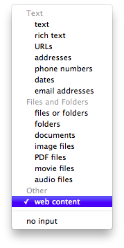
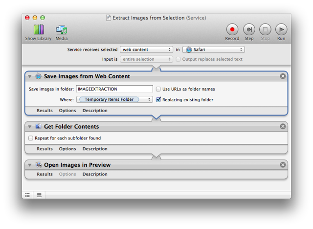
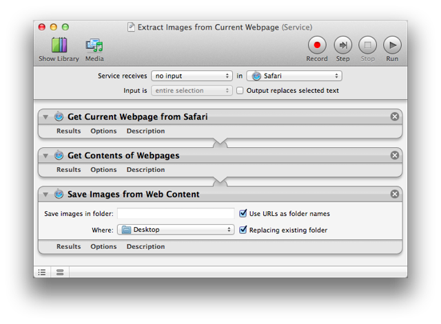

Web Content Data Type

Mac OS X Lion introduces a new input data type for Automator workflows: web content. Certain workflows and actions can now accept WebKit-based HTML web archive data, with an ID of com.apple.cocoa.web-archive, as their input. The new web content data type will now appear as an input option on the service workflow input menu (shown on left).
This web content data type is what applications like Safari, or other applications incorporating WebKit views, place on the pasteboard when elements are selected in these applications.
Web Content Actions
In Lion, Automator's default action library includes two new actions that use this new data type: Get Contents of Webpages, and Save Images from Web Content.
The Get Contents of Webpages action will return the contents of webpages, whose URLs are passed to the action as input, as web-archive data. Note that the action result is web-archive data NOT web-archive files. Any action followin the Get Contents of Webpages action in a workflow must accept web content as its input data type.
The Save Images from Web Content action will extract images from the web content passed to it, saving the extracted images as files to disk. So this action takes web content as input, and returns files as output.
Image Extraction Services
Here are two example services that use the new data type to extract images from webpages or from content selected in a WebKit-based view.
The Extract Images from Selection service will extract images from the selected web content in Safari and open the extracted image files for editing in Preview.

The Extract Images from Current Webpage service will extract the images from the webpage currently displaying in Safari, and place the extracted image files in a folder on the desktop, named for the URL of the current page.

 TRY IT YOURSELF! Download a zip archive of the service workflows shown above. To install, double-click each workflow file and click the Install button in each of the forthcoming dialogs. Once installed, the services will be available from the Application > Services menu.
TRY IT YOURSELF! Download a zip archive of the service workflows shown above. To install, double-click each workflow file and click the Install button in each of the forthcoming dialogs. Once installed, the services will be available from the Application > Services menu.